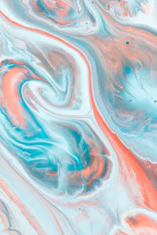
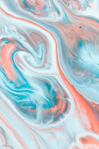
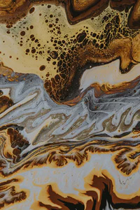
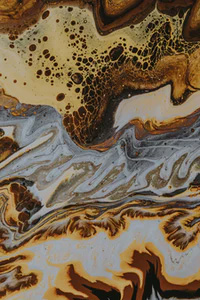

Made up of a diverse group of internationals, we view every project in the global context, not just with local eyes — .
Panel Discussion: Stories from the Montreal end-in. Made up of a diverse group of internationals, we view every project in the global context. Not just with local eyes. This outward thinking approach allows us to create work that stands out amongst the sea of same.
R. Allen
M. Baxter
M. Stannard
J. Barber
.


 
 Writter & Director [Ross Allen] - Director of Photography [Mitchell Baxter] - Produced [Mack Stannard] - Starring [MJ Kehler & Samuel Campbell Wilson] - Production Company [Boldly] EP [Kristoff Duxbury]Editor [Ross Allen] - Camera Assistant [Charles Hadrian] - Music [Jeremy Wallace Maclean] - Mix [Matt Drake] - Colour [Sam Gilling] - Words [Camille Brown] On Sets Stills [Gerard Wood] - Support [Keslow Camera / Boldly] - Production Company [GOOD-IDEA®].
Watch 
 

Writer / Director [Ross Allen] - Producer [Mack Stannard] - Cinematographers [Mitchell Baxter / Jon Thomas / Jaryl Lim / Ben Cox / Cristobal Ruiz / Liam Higgins / Jonny Micay / Justin Black / Adrian Vieni / Daniel Everitt-Lock / Brian Hamilton / Adam Madrzyk / Shae Paterson / Halley Davies / Simon Jaynes / Oli Jobin / Matthew A MacDonald - Edit [Ross Allen] - Sounds Design & Mix [Matt Drake] - Grade [Sam Gilling] - Original Music [Blake Matthews] - GFX [Dane Armour] - Social Strategist [Andrew Chee] - Partners [CanadaHelps / Gore Mutual] - Production Company [GOOD-IDEA®].
Watch Incredible as this seems to our ordinary ideas, it is undoubtedly an understatement rather than an exaggeration of the true proportion as observed in the case of koilon.
Watch
Director [Ross Allen] - Producer [Mack Stannard] - Executive Producer [Jordan Barber] - Director of Photography [Mitchell Baxter / Jon Thomas] - Steadicam Operator [Jan Schadle Ubeda] - Stylist [Mackenzie Dunham] - Photographer [Michele Bygotdt] - Editor [Miguel Barbosa] - Colourist [Clinton Homuth] - Original Score [Andrew Harris] - Sound Design [Vapor Music] - Starring [Tatenda Hatugari / Emma Young].
Watch Director [Ross Allen] - Director of Photography [Cole Graham] - Producer [Jordan Barber] - Production Manager [Phillip Thomas] - Production Coordinator [Spencer Foley] - Production Company [Confluence Films] - Production Designer [Jo Carkner] - Agency [Rethink Canada] - Producer [David Fraser-Winsby] - ACD [Sean O'Connor] - ACD [Pamela Rounis] - Senior Art Director [Jake Hope].
Watch Incredible as this seems to our ordinary ideas, it is undoubtedly an understatement rather than an exaggeration of the true proportion as observed in the case of koilon.
Watch Incredible as this seems to our ordinary ideas, it is undoubtedly an understatement rather than an exaggeration of the true proportion as observed in the case of koilon.
Watch Incredible as this seems to our ordinary ideas, it is undoubtedly an understatement rather than an exaggeration of the true proportion as observed in the case of koilon.
Watch